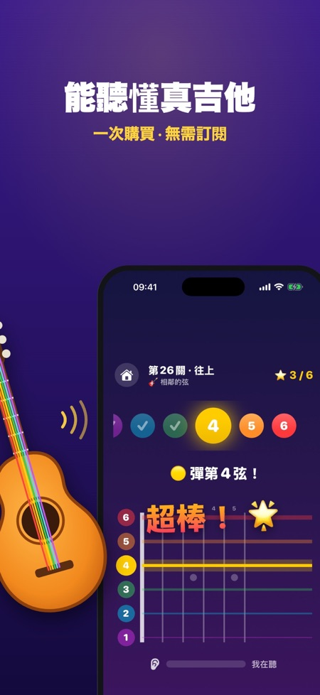
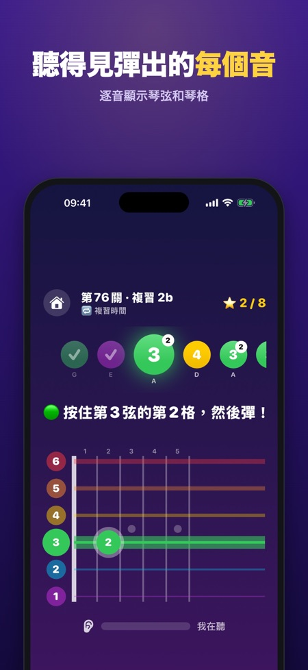
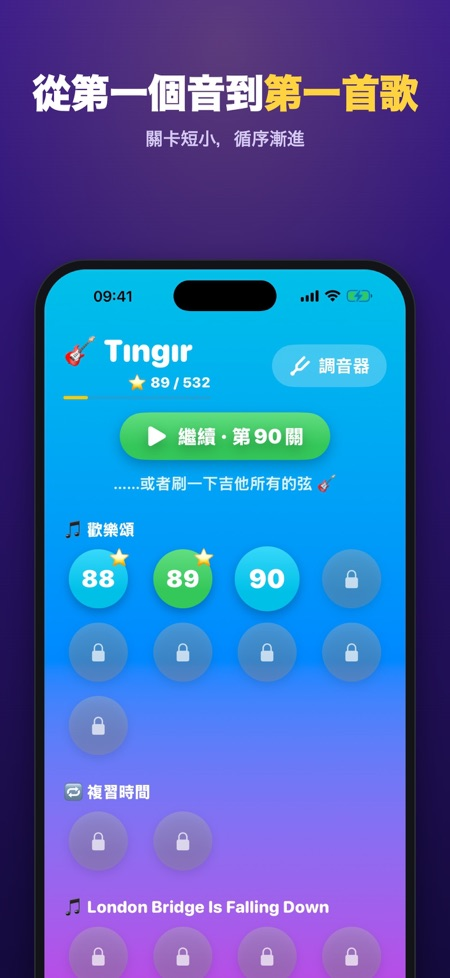

課程、歌曲和調音器. 拿起一把真吉他，讓 Tıngır 來聽！ 每彈對一個音都有掌聲，每過一關都有彩紙。 從第一個音到第一首歌，500 多個關卡。 無廣告、無訂閱、不收集任何資料。 .



Tıngır 是一款讓孩子用真吉他邊玩邊學的遊戲。 不用點螢幕：吉他就是手把。 把 iPad 或 iPhone 放在面前，撥一根弦，Tıngır 會透過麥克風聆聽，並辨認你彈的是哪根弦、哪個音。
從最簡單的開始
• 先彈空弦：一根一根、兩次、相鄰的弦
• 再學按格的音，一個一個來
• 然後是歌曲：分段彈、整首彈，最後憑記憶彈
532 關，34 首歌
生日快樂、歡樂頌、鈴兒響叮噹、貨郎、給愛麗絲等等——還能在粗弦上和其他調上彈。
每一步都有掌聲
每個對的音都有「超棒！ 」，每關結束都有星星、彩紙和號角。 彈錯沒有懲罰——只有「再試一次！ 」
不碰螢幕也能玩
一關結束後，刷一下所有的弦就能進入下一關。
內建調音器 · 40 種語言
隱私
無需帳號，沒有廣告，不收集任何資料。 麥克風只在裝置上用於辨認音符；不會錄音，也不會傳送任何內容。
適用於木吉他、電吉他和古典吉他。
每一關怎麼玩
1. Tıngır 用彩色琴弦和大號數字顯示要彈哪條弦、按哪一格。
2. 孩子在真吉他上彈出這個音。
3. Tıngır 聽到後拍手，接著進入下一個音。 不會看譜也沒關係。
給家長的話
• 每一關都很短，方便每天練習
• 進度儲存在這台裝置上，不需要註冊帳號
• 離線可用，彈奏時不需要網路
• 適合作為上吉他課之前的第一步，也適合搭配課程在家練習
• 顏色和數字會給出指引，不懂樂譜和樂理也能開始
• 彈錯不扣分，在一次次稱讚中慢慢進步
常見問題
可以用什麼吉他？
木吉他、古典吉他和電吉他都可以，兒童尺寸的小吉他也沒問題。
在吵鬧的房間裡能用嗎？
在安靜的房間裡，把裝置放在吉他附近，辨識效果最好。
吉他音不準怎麼辦？
先用內建調音器把吉他調準，這樣每個音都能被正確辨識。
幾歲可以開始？
只要能撥動琴弦就可以開始。 年紀小的孩子建議在家長陪伴下從空弦關卡開始。
需要會彈吉他嗎？
完全不需要。 Tıngır 從最簡單的空弦開始，一步一步帶孩子彈到第一首完整的歌。
一次要練多久？
每天幾分鐘就夠了。 關卡很短，孩子可以隨時停下，下次接著往下學。
需要一直點螢幕嗎？
不需要。 關卡結束後，刷一下所有琴弦就能進入下一關。
會錄音嗎？
不會。 麥克風只在裝置上用來辨識音符，不會錄音，也不會傳送任何內容。
彈錯了會怎樣？
沒關係，不扣分，只會聽到鼓勵，再彈一次就好。
可以在 iPhone 上用嗎？
可以，iPad 和 iPhone 都能用。 把裝置立在面前，讓麥克風朝向吉他。
支援哪些語言？
共 40 種語言，包括簡體中文和繁體中文。
適合誰
• 想讓孩子接觸音樂、又不想一開始就啃樂譜的家庭
• 家裡有吉他，但不知道從哪裡教起的家長
• 已經在上吉他課、需要在家多練習的孩子
• 喜歡闖關和收集星星的孩子
一次性購買即可解鎖全部 532 關和 34 首歌曲。 無訂閱。 購買頁面需通過家長驗證。